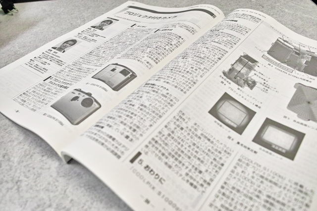
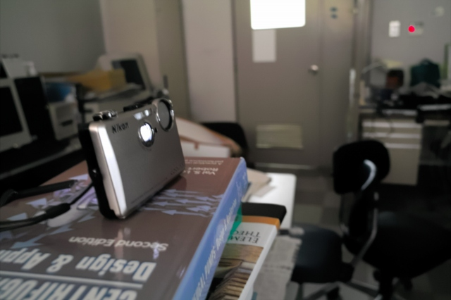
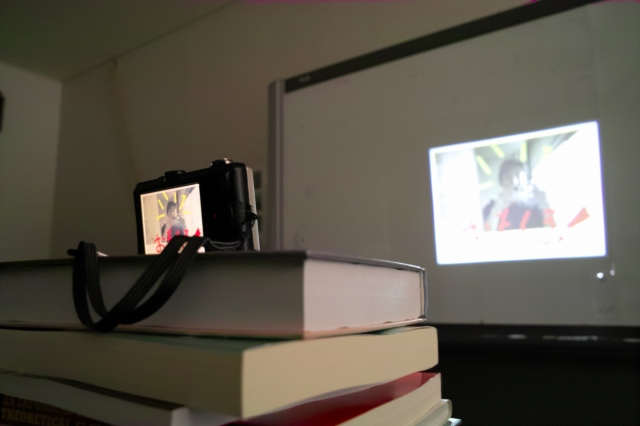
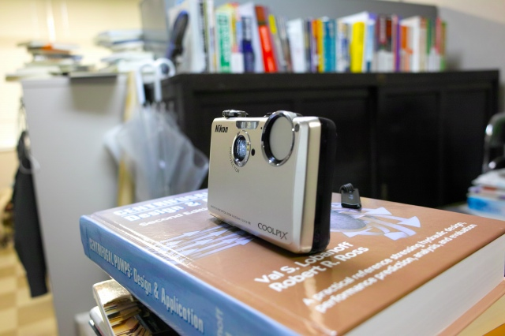
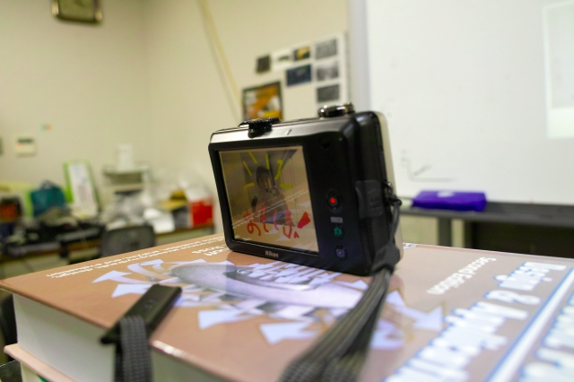

| ・ The world's first projector camera (H23.06.13) | |||
計測研の卒業生(H16)，高橋伸明くんの携わった製品：プロジェクター内蔵カメラ「COOLPIX S1100pj」が機械学会誌のメカライフ6月号:プロジェクタ付きカメラに掲載されました．世界初のプロジェクタ搭載カメラです．計測研の卒業生ガンバッテマス！新モノ好きの助教の人が早速Amazonでポチリ．プロジェクタは楽しいだけでなく，タッチペンの操作が新鮮だそうです．取説よまない助教の人でも10分で仲良くなれたとのこと．後日、高橋先輩の講演会が催されました。 |
|||
|

開発の経緯など，記事が楽しいです |
1:18から高橋くん登場 | ||
|

投影中 |

おもしろいなぁ | ||
|

予想以上に小さいし軽い |

タッチペンで操作が捗る | ||